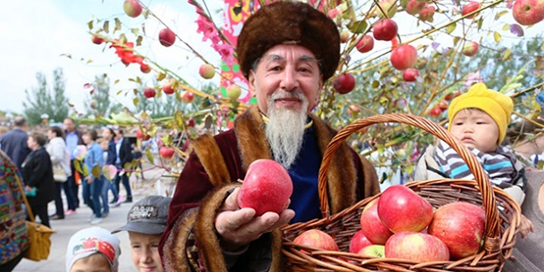

Қала туралы
Алма өсетін қала
«Алматы» атауы «алма» сөзінен шыққан. Қала Іле Алатауының етегінде, 600–1700 метр биіктікте орналасқан. Бұл — Қазақстанның ең үлкен қаласы әрі елдің мәдени, ғылыми және қаржылық орталығы.
- ◆ 1854 жылы Верный бекінісі ретінде негізі қаланды.
- ◆ 1929–1997 жылдары — Қазақстанның астанасы болды.
- ◆ Атақты «апорт» алмасының отаны.

Апорт
Қала символына айналған ірі әрі хош иісті алма сорты. Қаланың атауы да, рухы да осы жеміспен тығыз байланысты.